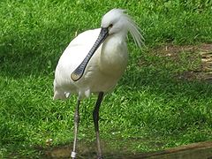
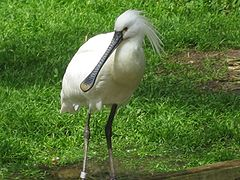

| Eurasian Spoonbill | |
|---|---|
|  | |
| Conservation status | |
| Binomial name | |
| Platalea leucorodia Linnaeus, 1758 |
| Eurasian Spoonbill | |
|---|---|
|  | |
| Conservation status | |
| Binomial name | |
| Platalea leucorodia Linnaeus, 1758 |
The Eurasian Spoonbill or Common Spoonbill (Platalea leucorodia) is a wading bird of the ibis and spoonbill family Threskiornithidae, breeding in southern Eurasia from Spain to Japan, and also in North Africa. In Europe, only The Netherlands, Spain, Austria, Hungary and Greece have sizeable populations.[1] Most birds migrate to the tropics in winter, with European breeders mainly going to Africa, but a few remaining in mild winter areas of western Europe south to the United Kingdom.
This species is almost unmistakable in most of its range. The breeding bird is all white except for its dark legs, black bill with a yellow tip, and a yellow breast patch like a pelican. It has a crest in the breeding season. Non-breeders lack the crest and breast patch, and immature birds have a pale bill and black tips to the primary flight feathers. Unlike herons, spoonbills fly with their necks outstretched.
The Eurasian Spoonbill differs from the African Spoonbill with which in overlaps in winter, in that the latter species has a red face and legs, and no crest.
There are three subspecies:
Birds in Asia are sometimes separated as P. l. major

{kind=link}
_at_Bharatpur_I_IMG_5640.jpg){kind=link}